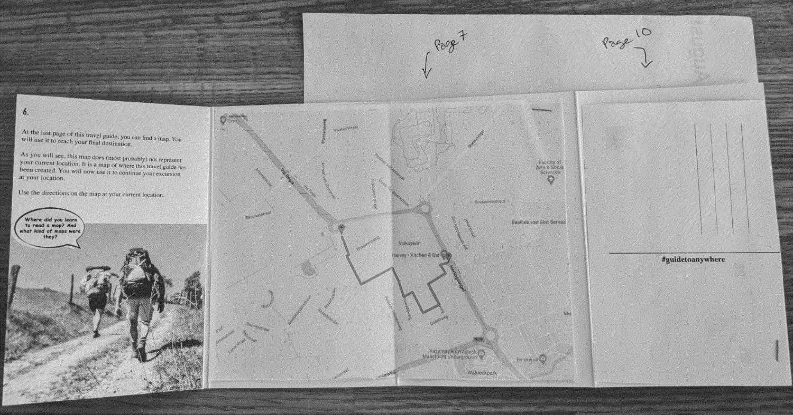

The digital proceedings of the 2022 DIY Methods Conference can be downloaded here. It's a large file--please allow a few minutes to download, and unzip when completed.
A screen-reader friendly version of the proceedings is forthcoming.
Authors that contributed a zine to the conference all recieved a set of print copies. We regret that these included a misprint of Veerle Spronck and Marlies Vermeulen's A Very Specific Guide to Anywhere. In the folded back cover, the inner pages were not printed. This does not affect the version included in the digital conference proceedings.
Contributing authors to the conference will therefore likely want to amend this error by printing and glueing in the missing pieces into their print copy. To do so, please download this pdf of the zine and print pages 7 and 10 with no scaling. These can then be easily cut and pasted into place, per the picture below.
